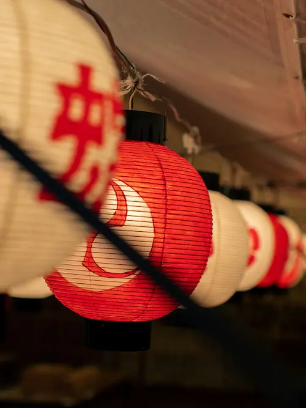
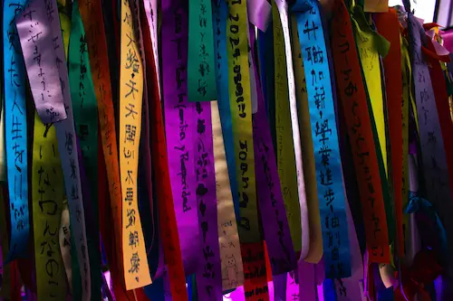
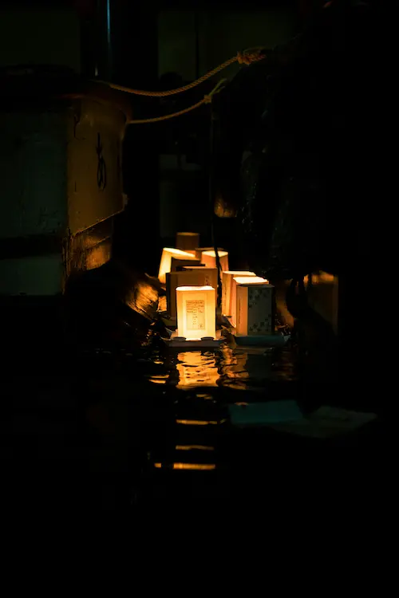
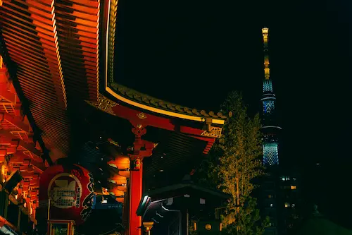
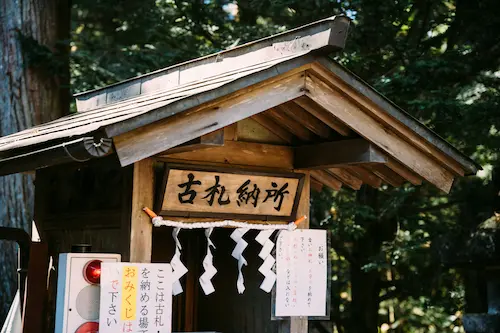
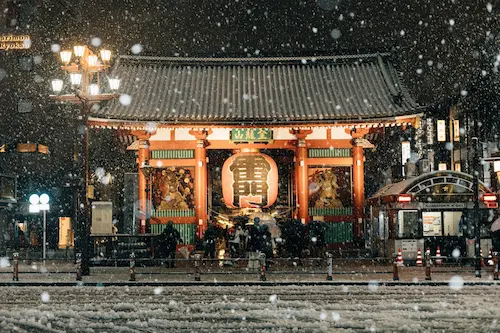
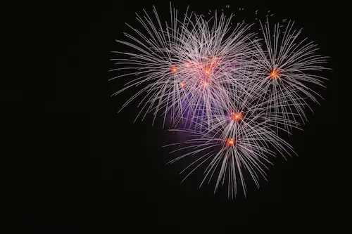

Origen: Periodo Nara (siglo VIII), popularizado en el periodo Heian
El hanami es la tradición de contemplar la floración de los cerezos (sakura). Familias y amigos se reúnen en parques para hacer picnic bajo los árboles en flor, celebrando la belleza efímera de la naturaleza. Es uno de los eventos más icónicos de la primavera japonesa y simboliza la fugacidad de la vida.
Curiosidad: En parques famosos como Ueno (Tokio) o Maruyama (Kioto), la gente reserva su lugar desde la madrugada para disfrutar del mejor sitio bajo los cerezos.

Gion Matsuri (祇園祭)
Fecha: Todo julio (eventos principales el 17 y 24)
Origen: Año 869, como ritual para detener epidemias
El Gion Matsuri es el festival más famoso de Kioto y uno de los más antiguos de Japón, con más de mil años de historia. Destacan sus enormes carrozas yamaboko, que desfilan por la ciudad decoradas con tapices y ornamentos tradicionales. Durante todo el mes hay procesiones, mercados y actividades culturales.
Curiosidad: Algunas carrozas pesan más de 10 toneladas y son consideradas Patrimonio Cultural Inmaterial de la Humanidad por la UNESCO.

Tanabata (七夕)
Fecha: 7 de julio (algunas regiones en agosto)
Origen: Basado en una leyenda china, introducido en Japón en el siglo VIII
El Tanabata, o Festival de las Estrellas, celebra la leyenda de dos amantes, Orihime y Hikoboshi, que solo pueden encontrarse una vez al año. Las calles se decoran con tiras de papel (tanzaku) donde la gente escribe sus deseos y adornos de colores cuelgan de ramas de bambú.
Curiosidad: En Sendai, el Tanabata es tan importante que se celebra en agosto y atrae a más de dos millones de visitantes cada año. Los adornos de bambú pueden superar los 5 metros de altura.

Obon (お盆)
Fecha: 13 al 16 de agosto (en algunas regiones en julio)
Origen: Tradición budista, celebrada desde el siglo VII
El Obon es una de las festividades más espirituales de Japón. Se cree que durante estos días los espíritus de los antepasados regresan al mundo de los vivos. Las familias limpian las tumbas, encienden farolillos y bailan el Bon Odori en plazas y templos. En Okinawa, el Eisa es el baile típico de la región.
Curiosidad: En algunas zonas se sueltan linternas flotantes en ríos o el mar para guiar a los espíritus de vuelta al más allá.

Año Nuevo (正月, Shōgatsu)
Fecha: 1 al 3 de enero
Origen: Tradición milenaria, con influencias chinas y sintoístas
El Año Nuevo japonés es la celebración más importante del calendario. Las familias visitan templos y santuarios para rezar por la buena fortuna, se preparan platos especiales (osechi ryori) y se envían tarjetas de felicitación. Es costumbre escuchar las 108 campanadas que despiden el año viejo.
Curiosidad: El primer sueño del año, llamado "hatsuyume", se considera un augurio. Soñar con el monte Fuji, un halcón o una berenjena es señal de buena suerte.

Setsubun (節分)
Fecha: 3 de febrero
Origen: Tradición del calendario lunar japonés, celebrada desde el siglo VIII
Setsubun marca el final del invierno y el inicio de la primavera. La costumbre más famosa es el mamemaki: lanzar habas de soja para ahuyentar a los demonios (oni) y atraer la buena suerte. En templos y casas, alguien se disfraza de oni y recibe la lluvia de habas.
Curiosidad: En el templo Sensō-ji de Tokio, celebridades y luchadores de sumo son invitados cada año para lanzar habas a la multitud.

Festival de Nieve de Sapporo (さっぽろ雪まつり)
Fecha: Primera semana de febrero
Origen: Desde 1950, cuando estudiantes locales construyeron las primeras esculturas
El Sapporo Yuki Matsuri se celebra cada febrero en la ciudad de Sapporo, en la isla de Hokkaido. Es famoso por sus gigantescas esculturas de nieve y hielo, que iluminan la ciudad y atraen a visitantes de todo el mundo. Hay concursos, espectáculos de luces y actividades para todas las edades.
Curiosidad: En algunas ediciones, el ejército japonés ha colaborado en la construcción de las esculturas más grandes debido a la magnitud y complejidad de las obras.

Hanabi Taikai (花火大会) – Festivales de Fuegos Artificiales
Fecha: Julio y agosto (varía según la ciudad)
Origen: Siglo XVIII (periodo Edo), popularizados en 1733
Los Hanabi Taikai son festivales de fuegos artificiales que se celebran en todo Japón durante los meses de verano, especialmente en julio y agosto. Tienen su origen en rituales para ahuyentar a los malos espíritus y pedir prosperidad. Los espectáculos más famosos, como el del río Sumida en Tokio o el de Nagaoka, reúnen a cientos de miles de personas. Es tradicional asistir vistiendo yukata (kimono de verano) y disfrutar de puestos de comida callejera, juegos y ambiente festivo. Los fuegos artificiales japoneses destacan por su belleza, variedad de formas y colores, y por la precisión de sus lanzamientos. Muchas familias y amigos reservan lugares con antelación para disfrutar del espectáculo junto al río o en parques. Es una experiencia visual y cultural inolvidable.
Curiosidad: El Hanabi Taikai del río Sumida en Tokio es tan popular que muchas personas reservan su lugar desde la mañana, y algunos fuegos artificiales alcanzan los 500 metros de diámetro en el cielo.